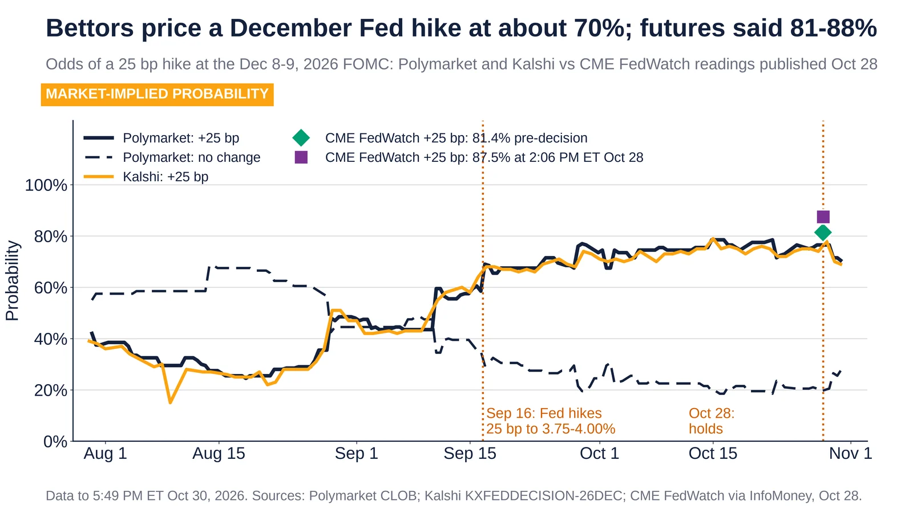
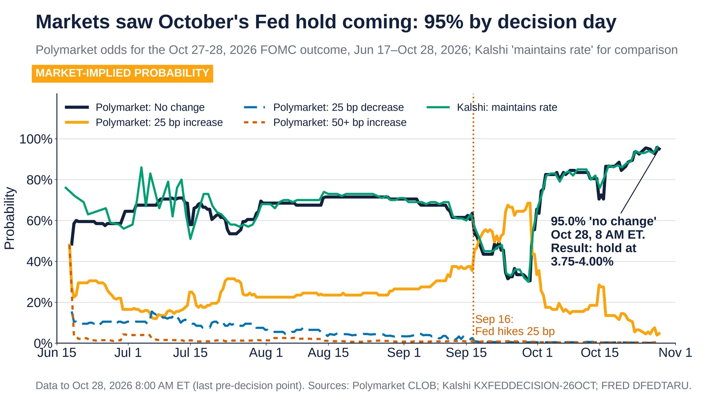

Q4. Fed & Markets

Odds of a 25 bp hike on Dec 9: Polymarket 70.5%, Kalshi 69% vs FedWatch 81–88% (Oct 28). Later reports put FedWatch at 74.9–79.6% on Oct 29–30, so the gap has narrowed. Data to Oct 30.
- Sep 16, 2026: the Fed hiked 25 bp to 3.75–4.00%, taking the FRED DFEDTARU upper bound to 4.00.
- Oct 28, 2026: the Fed held, by a 10–2 vote with two dissents favouring a hike.
- Oct 28, 2026: CME FedWatch put a December hike at 81.4% before the decision and 87.5% at 2:06 PM ET (InfoMoney).
- Oct 30, 2026, 5:49 PM ET: Polymarket has a hike at 70.5% and no change at 27.5%; Kalshi has a hike at 69%.
- Oct 29–30, 2026: later reports of CME FedWatch put a December hike at 79.6% (BlockBeats via KuCoin) and 74.9% (FXBus), about 4–11 points above the prediction markets.
Note: FedWatch figures are third-party reports of the CME tool, not a CME download; the CME FedWatch page could not be read directly. InfoMoney's post-decision figures sum to 101.8% (87.5% hike, 13.8% hold, 0.5% for 50 bp), so one of them is probably stale.
Sources: Polymarket, Fed decision in December Kalshi, Fed decision InfoMoney, CME FedWatch after the Oct 28 decision FRED, federal funds target range upper limit (DFEDTARU) BlockBeats via KuCoin, CME FedWatch 79.6% (Oct 29-30) FXBus, CME FedWatch 74.9% (Oct 30)

Polymarket "no change" odds rose from 48.5% (Jun 18) to 95% (Oct 28, 8 AM ET); Fed held. Sources: Polymarket, Kalshi.
- Jun 18, 2026: Polymarket priced no change at 48.5% and a 25 bp hike at 48%.
- Sep 16–29, 2026: after the September hike, the odds of a second hike briefly topped 65% and "no change" fell to about 31%.
- Oct 28, 2026, 8 AM ET: no change stood at 95.05%. The Fed held at 3.75–4.00%. Kalshi showed 96% at the close on Oct 27.
- Polymarket volume on this market was $101.9M, the largest of the five charts.
Sources: Polymarket, Fed decision in October Kalshi, Fed decision FRED, federal funds target range upper limit (DFEDTARU)